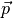
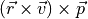
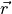

Attitude Controller Models¶
attitude_controller <attitude-controller-model-name> ... end_attitude_controller
- attitude_controller … end_attitude_controller¶
Specify the attitude controller for the platform. All platforms having a WSF_SPACE_MOVER or WSF_NORAD_SPACE_MOVER will have an attitude controller of some kind. If no attitude controller block is specified, the mover will operate as if the instant attitude controller was selected.
Attitude controllers will attempt to change the orientation of the platform to match a given target orientation. At creation time, the attitude controller will have a target orientation specified by an orientation command in the attitude controller block. After creation, the orientation target of the attitude controller can be changed via WsfSpaceMover.SetOrientation.
Target orientations are either a one-time selection of the target orientation, or it will connect the attitude controller to one of the pre-set orientation types. In the latter case, the attitude controller will have a continually updated target orientation as the craft moves along its orbit.
Available Models:
Attitude Controller Types¶
Instant Attitude Controller¶
attitude_controller instant orientation <orientation_type> ... end_attitude_controller
Specify an instant attitude controller. This will reorient the mover immediately upon having the orientation set.
Note
The instant attitude controller is used by default.
Rate Limited Attitude Controller¶
attitude_controller rate_limited maximum_yaw_rate ... maximum_pitch_rate ... maximum_roll_rate ... orientation <orientation_type> ... end_attitude_controller
Specify a rate limited attitude controller. This will reorient the mover to the target orientation at a maximum angular rate as specified by maximum_yaw_rate, maximum_pitch_rate and maximum_roll_rate.
- maximum_yaw_rate <angle-rate-value>¶
Specify the maximum time rate of change for reorientations in the platform’s yaw.
Default 1 degree/s
- maximum_pitch_rate <angle-rate-value>¶
Specify the maximum time rate of change for reorientations in the platform’s pitch.
Default 1 degree/s
- maximum_roll_rate <angle-rate-value>¶
Specify the maximum time rate of change for reorientations in the platform’s roll.
Default 1 degree/s
Orientation Types¶
- orientation <orientation-type>¶
- orientation <entity-orientation-type> <platform-name>¶
- orientation <geo-point-orientation-type> <geo-point-name>¶
Specify how the platform is to be oriented.
All orientation types describe a pointing alignment and pointing constraint for two of the three ECS axes. Depending on the type, either:
the ECS z-axis points in the direction of the fixed orientation, while the ECS x-axis points in the direction of the constraint (in the plane of the constraint direction and z-axis) or
the ECS x-axis points in the direction of the fixed orientation, while the ECS z-axis points in the direction of the constraint (in the plane of the constraint direction and x-axis).
Note
For example, nadir_with_eci_velocity_constraint means that the ECS z-axis points to center of the Earth (nadir), while the ECS x-axis points in the direction of the velocity vector, constrained to the plane of the velocity vector and nadir.
Standard orientation types are the following:
nadir_with_eci_velocity_constraint : Z-axis nadir orientation with ECI x-axis velocity constraint
nadir_with_ecef_velocity_constraint : Z-axis nadir orientation with ECEF (WCS) x-axis velocity constraint
nadir_with_solar_constraint : Z-axis Nadir orientation with solar constraint
solar_with_nadir_constraint : Z-axis Solar orientation with nadir constraint
eci_velocity_with_nadir_constraint : X-axis ECI velocity orientation with z-axis nadir constraint
eci_velocity_with_solar_constraint : X-axis ECI velocity orientation with z-axis solar constraint
none : No orientation / constraint is provided. Orientation changes must be input by the user.
Entity orientation types are the following:
entity_with_solar_constraint : X-axis entity orientation with z-axis solar constraint
entity_with_nadir_constraint : X-axis entity orientation with z-axis nadir constraint
entity_with_orbit_plane_constraint : X-axis entity orientation with z-axis orbit plane constraint
Note
Given the entity pointing alignment vector , the orbit plane constraint is defined to be , where  is the inertial location vector and
 is the inertial velocity vector.
is the inertial velocity vector.Note
The <platform-name> must be the name of a pre-defined platform in the current scenario.
The geo-point orientation type is the following:
point_with_orbit_plane_constraint : X-axis geo_point orientation with z-axis orbit plane constraint.
Note
Given the geo-point pointing alignment vector , the orbit plane constraint is defined to be , where is the inertial location vector and
is the inertial velocity vector.Default nadir_with_eci_velocity_constraint
Note
Scripted orientation methods and attitude change event can be used to change the platform’s attitude during the course of a simulation.
Note
All orientation types are with respect to the platform’s ECS coordinate frame, which is right-handed.
- swap_axes¶
Swap the pointing and constraint axes for the currently specified orientation.
Note
For example, if the nadir_with_eci_velocity_constraint orientation is specified, followed by swap_axes, the x-axis will point at the nadir, and the z-axis will point in the direction of the velocity constraint.